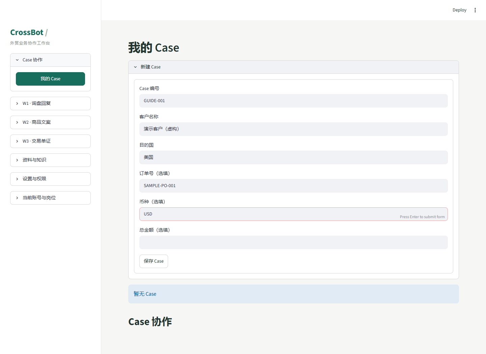
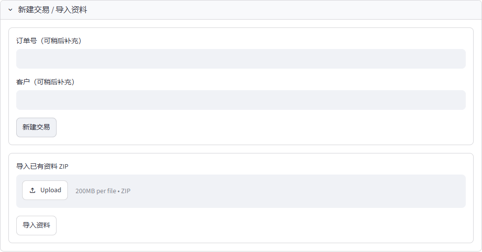
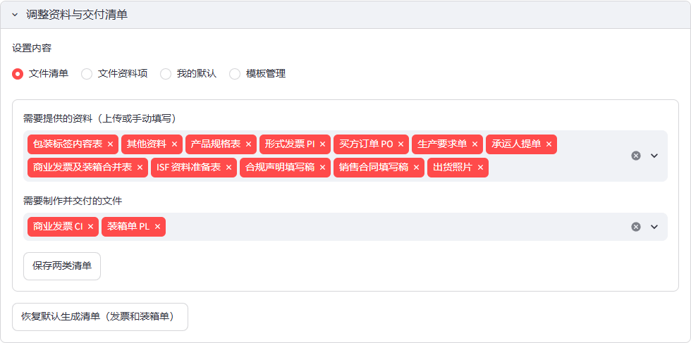
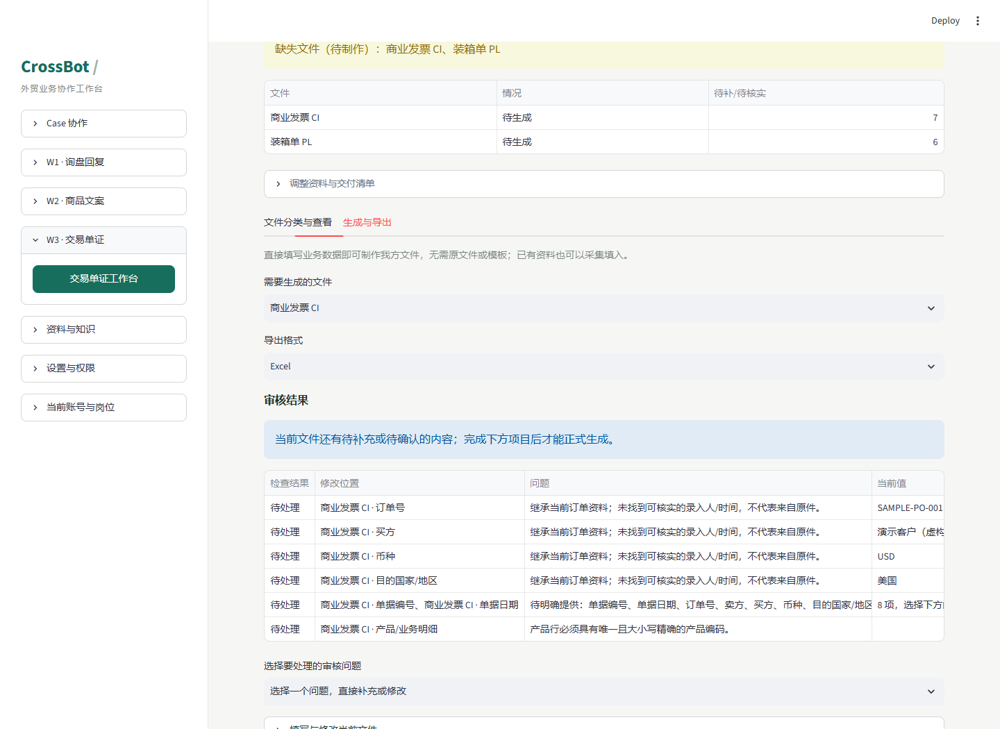
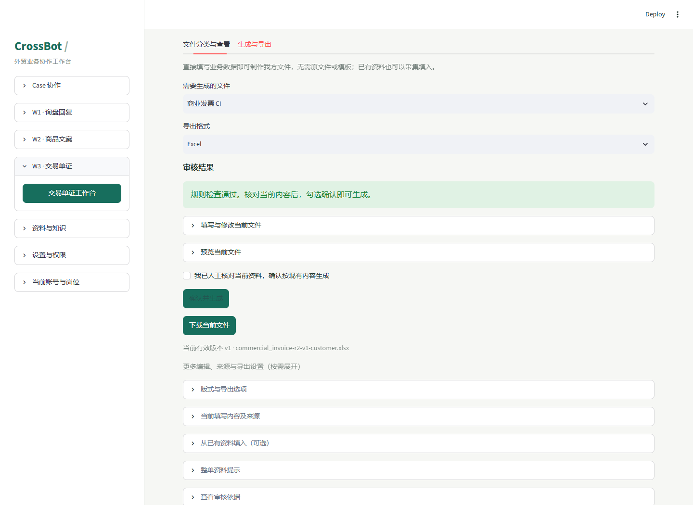
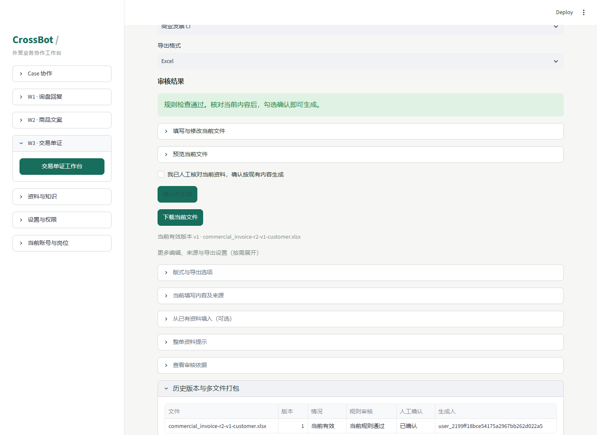
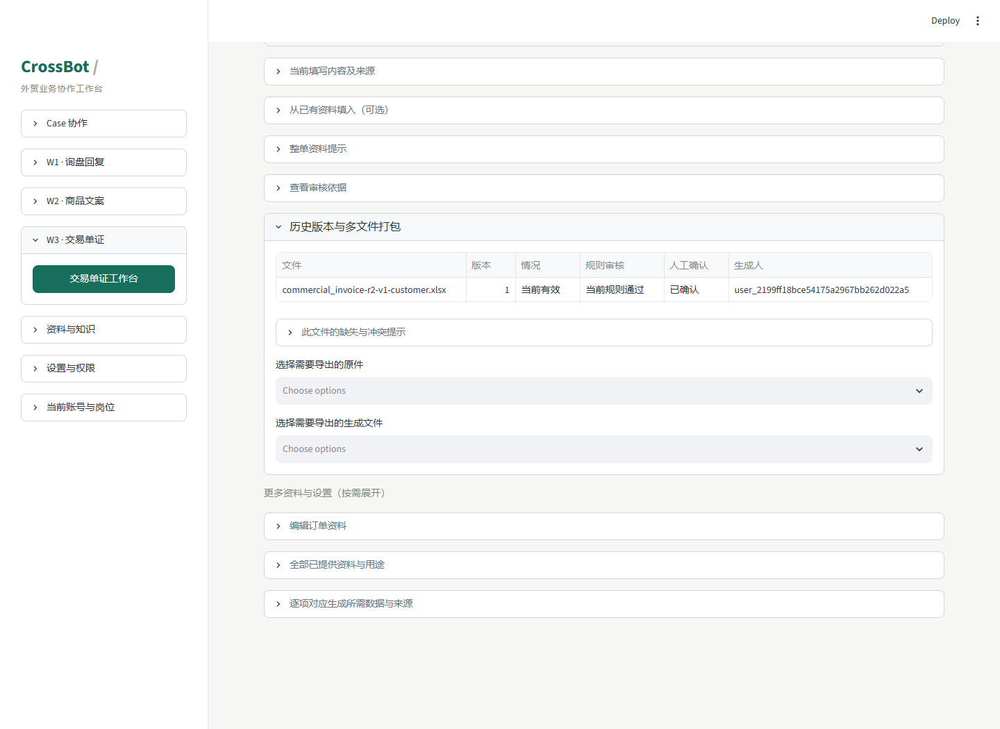

从一包原件，到可核对的交付文件
同一包资料，练完 W1、W2 和 W3。 以你提供的“2026003 已经发货等待收钱(1).zip”为练习入口。W1 使用“制作纸巾包装盒并发往加州”的询盘练习；W2、W3 继续按资料包和已核实产品资料操作。测试默认使用管理员账号。
本次主线：准备同包资料 → W1 回复 → W2 文案 → W3 核对、生成与打包 按下面步骤分别完成询盘回复、商品文案与交易单证测试。W3 截图沿用虚构订单，操作步骤按当前代码核对。
已发货 / 待收款 · 案例背景 你的测试环境 ZIP 版交易中已经预置示例 本次直接导入示例 ZIP（默认） 先确认已导入的交易、原件和模板版本，避免重复导入。
STEP 01 / 准备示例
先拿齐三样：原件、可信业务值、可用 Case。 操作地点： 本机文件夹 + 测试环境
INPUT 交易原件 本例默认整包导入 ZIP；已预置时直接核对导入资料。
DATA 核实后的业务值 由资料准备人员提供。缺少的信息记录为待补充。
LAYOUT 输出版式 已有模板按需选用；默认简单版也能测试主流程。
OUTPUT CI + PL 制作商业发票、装箱单，保留原件与生成版本。
取得测试账号、工作台地址和 Case 标识。 本教程默认使用已有管理员账号，当前激活岗位设为“管理员”。W1/W2 在主工作台使用该管理员账号；W3 ZIP 版需独立创建并登录管理员账号。两套账号、Case 和数据不互通，同名账号也需分别初始化；主站密码至少 12 位，ZIP 版至少 10 位。
让资料准备人员确认：本例已经放进哪个 Case？ 准备原 ZIP，保持压缩包完整。 查看该 Case 的原件、填写内容和模板版本；不要重复上传整套资料。
示例已随仓库放在 documents/tester_guide/examples/，原包由用户授权提供且未脱敏。第 05 步在 ZIP 版工作台选择该包，无需先解压；原包保持不变。
区分“原件”和“导出模板”。 PO、PI、提单、合规资料、照片是业务依据；导出模板是排版用的 XLSX。已填写的原件不能因为“像表格”就当作空模板。
这次做到哪里？ 先用同包产品做询盘回复与平台文案，再跑通资料录入、核对、我方文件生成和打包下载。按实际目的国、产品、运输方式、贸易与付款条件调整清单，不照搬所有文件类别。
如何理解“已经发货等待收钱”？ 这是示例的业务背景。包名不能证明发货或到账；生成成功也不会自动登记收款。实际状态以负责人和原始凭据为准。
准备三类资料模板并分别上传
如准备人员另行提供，可打开 test use 文件夹；本仓库未随附该文件夹，也可在主工作台对应页面下载 JSON 模板，按文件名或文件夹说明找到产品资料、知识库、风险词库 三类对应模板。若是空白模板，先填写已核实内容；已有测试资料的文件则先核对内容，再按下表分别上传。
资料类别 主工作台上传入口 选择文件与保存按钮
产品资料模板 资料与知识 → 产品资料 → 上传产品资料 选择产品资料文件 → 保存到产品资料草稿 知识库模板 资料与知识 → 知识库 → 上传知识库 选择知识库文件 → 保存到知识库草稿 风险词库模板 资料与知识 → 风险词库 → 上传风险词库 选择风险词库文件 → 保存到风险词库草稿
用管理员账号打开主工作台，三类文件分别上传。 在“选择…文件”中浏览到已下载模板或另行提供的 test use，选择与当前入口对应的文件，不要把三类文件传到同一个分类。产品资料和风险词库支持 JSON / CSV；知识库还支持 UTF-8 TXT / Markdown，单文件不超过 2 MB。
预览后填写来源，再保存为草稿。 核对“选择本次保存的条目”、资源标识及内容，填写“内容来源（必填）”，按资料填写适用国家或市场、适用平台、适用产品范围 / SKU。JSON / CSV 含多条记录时，每次只保存选中的一条，切换条目重复保存。
提交审核，审核通过后发布。 展开刚保存的草稿，点“提交审核”；由另一名有审核权限的账号填写审核意见并点“审核通过”，再由管理员点“发布已审核版本”。管理员也不能审核本人提交的资料。上传后只显示“草稿”时尚未发布；需要供 W1/W2 检索使用的资料应确认状态为“已发布”。
本项完成标准 已从页面模板或另行提供的 test use 准备并分别上传三类资料，核对资源内容与来源；需用于生成的版本已完成独立审核和发布。
STEP 02 / 选对订单
登录后，先核对“当前 Case”。 侧栏 Case 协作 → 我的 Case ；页面内 当前 Case
默认使用管理员账号登录。 使用已有管理员账号和密码，在“当前账号与岗位”确认激活岗位为“管理员”。只有空账号库首次启动时，才使用“创建初始管理员”。
在“当前 Case”选择分配给你的示例单。 核对 Case 编号、客户和目的国。看不到目标单时，联系管理员分配 Case，并核对当前激活岗位。
只有需要新建测试单时，展开“新建 Case”。 填写“Case 编号”“客户名称”“目的国”；其余按已核实资料选填，再点“保存 Case”。已有示例 Case 可跳过。
应该看到 当前选择的是本次示例 Case，页面显示的客户和目的国与资料说明一致。
截图怎么用 图中的 GUIDE-001、演示客户和 SAMPLE-PO-001 是虚构值。实际测试使用准备人员提供的值。

真实界面 / 虚构数据 · 点击图片放大。已预置示例时，直接选择 Case，不需要新建。1 左侧进入“Case 协作”。2 确认案例归属与业务字段。3 新建时点“保存 Case”。
STEP 03 / W1 · 纸巾包装盒询盘
询问能否制作纸巾包装盒，并发往加州。
侧栏 W1 · 询盘回复 → 起草客户回复 ；查看历史：回复与修订历史
本次 W1 使用下面的测试询盘，练习回答定制纸巾包装盒及发往美国加州的问题。产品规格、数量和具体收货地址尚未提供时，回复应先询问确认。
保持“管理员”岗位，先配置模型。 到“设置与权限 → 模型服务”，填写“服务基础地址”“模型名称”“API Key”，核对“接口协议”，阅读并勾选业务资料发送与额度确认。W1/W2 点击生成会调用真实服务；只使用获准发送的资料。切换功能页保留设置，刷新、退出或更换账号后需重填。W3 确定性核对不依赖此配置。
选择“询盘 → 新建询盘”，选纸巾包装盒产品和“回复语言”。 “产品”列表读取已发布产品；已有纸巾包装盒资料时选择对应产品，也可选“按询盘关键词检索”。缺少尺寸、材质、印刷要求、数量或运输信息时，应向客户追问，不套用其他产品参数。
在“客户新消息”粘贴本单询盘，再点“保存并生成回复”。 使用下面的纸巾包装盒询盘。目的地为美国加州；未提供的价格、起订量、生产周期、运费和交期留待确认，不作无依据的承诺。
对照原件核对回复，再做一次修改。 检查回复语言、产品事实、客户问题和待确认项；展开“检索依据与订单字段”查看引用。继续客户对话就在“客户新消息”填写；只改措辞则展开“调整回复”，在“调整要求”填写意见后点“生成修改稿”。失败时消息仍保存，使用“重试生成回复”，不要反复新建询盘。
导出本次询盘记录。 点“导出对话”保存 TXT，核对客户问题、回复和修改稿是否完整。
本次 W1 测试问题（可直接复制） 在“客户新消息”中输入以下测试问题：
请问你们可以制作纸巾包装盒，并发货到美国加州吗？ 检查回复是否回答定制与配送问题，并追问盒型、尺寸、材质、印刷要求、数量及加州具体收货地址；生产和运输能力以已核实资料为准。
应该看到 针对纸巾包装盒制作及发往加州的回复与修改稿；缺少的规格和运输条件明确列为待确认，能查看来源并导出对话。
STEP 04 / W2 · 同一产品的商品文案
把本包产品资料，整理成指定平台的文案草稿。
侧栏 W2 · 商品文案 → 多平台文案 ；查看历史：文案结果记录
保持“管理员”岗位，核对“当前 Case”。 选择本次文案测试使用的 Case，确认客户与目的国。沿用已配置且确认的模型设置；生成结果为文案草稿。
在“01 填写资料”填写“中文产品描述”。 从同一 ZIP 的可信产品资料、参数表或已核实原件整理产品名称、SKU、规格、材质、用途和已证实卖点；可加入已发布产品标识帮助检索。不要把客户姓名、订单金额、收款信息、提单号写成公开卖点。包内没有的产品事实先向负责人补齐，不能从营销常识推导认证或性能。
选择“重点适配平台”“文案输出语言”和“目标市场（可留空）”。 按本次测试任务选一个或多个平台；目标市场以核实的目的国/销售市场为准，不从包名推测。清除预选的无关平台。展开“已发布知识与平台规则（当前输入）”核对产品、来源与适用市场；规则提示不能证明产品已获认证。平台为空时应阻止进入生成。
点“下一步 · 生成文案”，在“02 生成与修订”点“生成所选平台文案（真实，消耗额度）”。 只应出现所选平台结果。逐平台检查语言、标题、卖点、描述、风险与待确认信息，和本包产品资料逐项对照。输入“修改要求”，点“修订所选平台文案（真实，消耗额度）”，再核对一次事实与风险。产品、平台或语言改动后需重新生成，不能拿历史结果当作新结果。
到“03 复核与导出”，下载本轮草稿。 通过“下载W2结果（TXT）”保存文案，需留存输入与结果时使用“下载全部业务记录（JSON）”。也可在“文案结果记录”复查已保存结果。页面显示成功不表示平台审核通过。
本包产品描述的整理框架 产品名称 / SKU：［按核实资料填写］ 本框架只说明整理方式，不代表实际产品。不要直接提交未替换的方括号或把“尚未核实”内容当作确定卖点。
应该看到 与本次产品资料相符、仅面向所选平台的文案及修订结果，能够下载。
STEP 05 / ZIP 导入与固定清单
整包导入，按本例保存两类清单。
ZIP 版交易单证工作台 → 新建交易 / 导入资料 → 导入已有资料 ZIP
打开 ZIP 版工作台，用管理员账号登录。 本步骤使用独立 ZIP 版地址，使用该工作台已有管理员账号；首次空账号库可创建管理员。当前 W1/W2 主入口 app.py 的 W3 上传页不接受 ZIP，不能把 ZIP 放进“选择原始文件”。
展开“新建交易 / 导入资料”，选择原 ZIP，点“导入资料”。 在“导入已有资料 ZIP”选择本例压缩包，不需要先解压，也不需要先点“新建交易”。导入会创建并选中一笔交易，原路径、原件和候选内容一并保留；ZIP 内有文件夹也可导入。
确认“资料已导入，请核对分类。”，再看“选择交易”。 本例测试导入保留 39 个文件，原件哈希全部一致。重复导入相同字节的包会返回同一笔交易。导入成功不等于字段已采集齐全，先按第 06 步核对，再继续生成。
展开“调整资料与交付清单”，把“设置内容”固定选为“文件清单”。 本教程不再让测试者自行决定：第一栏清空后只选下面 12 类；第二栏只选“商业发票 CI”“装箱单 PL”，再点“保存两类清单”。

在“导入已有资料 ZIP”选整包，再点“导入资料”。截图为隔离环境合成资料，不含用户原件。 需要提供的资料（上传或手动填写）：本例固定选这 12 类 选择 界面中的准确名称 目录分类文件数 选中 包装标签内容表 3 选中 其他资料 2 选中 产品规格表 1 选中 形式发票 PI 2 选中 买方订单 PO 2 选中 生产要求单 1 选中 承运人提单 1 选中 商业发票及装箱合并表 1 选中 ISF 资料准备表 1 选中 合规声明填写稿 4 选中 销售合同填写稿 1 选中 出货照片 20
需要制作并交付的文件：只选这 2 项 商业发票 CI、装箱单 PL。保存后看到“本单清单已更新。”；来源共 12 类，交付共 2 类。
上表是按本例 ZIP 目录分类制定并验证可保存的测试清单，文件数合计 39；内容和自动分类仍要逐项核对。ISF 资料准备表、合规声明填写稿和销售合同填写稿是资料分类，不能当作申报回执、认证或已签合同。原件照常留存，生成清单只做 CI、PL。
查看已保存的固定清单界面（合成数据） 
此处已实际保存两类清单。不要再点击“恢复默认生成清单”替代本例设置。 测试准备人员：启动 ZIP 版入口 在仓库根目录的 WSL 环境运行：
export CROSSBOT_W3_DATA="$PWD/.w3-data/tester-guide"
./.venv/bin/python -B -m streamlit run documents/tester_guide/zip_workbench.py --server.address 127.0.0.1 --server.port 8503 --server.headless true --browser.gatherUsageStats false打开本机 http://127.0.0.1:8503。Windows 命令及安装前提见项目根 README 第 6 节。此入口调用现有独立单证工作台；使用其管理员账号。主工作台地址继续用于 W1/W2。
STEP 06 / 核对导入资料
核对整包原件、自动分类与采集结果。 文件分类与查看 → 按分类查看 → 查看文件
先核对总数与原件留存。 展开“全部已提供资料与用途”核对导入资料；本例 ZIP 共 39 个文件。通过“查看文件”“查看选中原件”及“文件版本”定位原件，按需“下载原件”。不要把同一文件夹或同一内容的多份原件当作缺项而重复上传。
逐类核对，必要时修正文件分类。 对照第 05 步的 12 类，展开“修正文件分类”，选择真实类型并点“保存分类”。买方 PO 不选“生产要求单”；商业发票及装箱合并表不应只归为 CI 或 PL；机构出具的文件保留原件，不重新制作替代文件。
检查候选内容，再分别填入 CI、PL。 本例导入测试中 11 份文件产生字段候选，36 份带有解析或待核对提示；这些指标不是自动识别成功率。扫描件、照片或复杂版式仍可能需要人工录入。展开“采集并填入表单 / 移除文件”，在“采集后填入哪份表单”选择“商业发票 CI”或“装箱单 PL”，点“采集并填入表单”；同一合并表按需分别用于两份文件。
只有漏件或修订时才单独补传。 将“补充方式”选为“上传文件”，选择单个原件、核对分类后点“保存文件”。修订同一逻辑文件时保存为原文件的新版本；已整包导入的资料无需逐个重复上传。
应该看到 原件可查看或下载，分类准确；有依据的候选出现在对应表单中，缺失或无法识别的内容仍明确提示待补、待核实。
整包导入已通过实际测试，但不会自动确认业务值、生成正式 CI/PL 或批准交易。继续完成后面的人工作业和规则检查。
STEP 07 / 核对与补齐
按“审核结果”逐项处理，不凭猜测补数据。 生成与导出 → 需要生成的文件 → 审核结果
先选“商业发票 CI”，逐条看审核问题。 查看修改位置、当前值和对照值。在“选择要处理的审核问题”定位并修正；或展开“填写与修改当前文件”，按来源核对表头与产品行后保存。
缺一项就补一项；来源不明确就先核实。 在“文件分类与查看 → 按缺项补充”可上传关联原件或直接填写。已有值仍提示待核实时，要对照依据，完成对应来源确认。订单继承值可在“编辑订单资料”核对并保存。
再选“装箱单 PL”，核对产品行。 用产品编码逐行对应品名、数量和单位，核对箱数、毛重、净重；CI 的币种、单价和金额须有依据。合计相同不能掩盖明细不同。
出现外部来源待核实，具体点哪里？ 在当前文件下展开“核对参与比对的外部字段”，对照原件修正“确认值”，勾“我已逐项核对上表所选字段的原件和确认值”，点“确认外部字段并重新审核”。
若出现“核对外部原件的全部产品明细”，逐行核对完整产品集，勾“我已对照原件核对上表全部产品行”，点“确认原件明细并重新审核”。不要只确认第一行，也不要删行消除差异。
应该看到 必需资料不再缺失或待核实，当前文件规则检查通过。原件采集候选仍须由真人对照确认。
一个最常见的问题 “字段里已经有值”不等于“有可核实来源”。不要只勾生成确认来绕过缺失来源、原件明细未核对或跨单据冲突。

先看问题表，再决定到哪里修正 · 此图演示缺项与来源待核实状态，正式生成会被阻止。1 选择要核对的 CI 或 PL。2 看“修改位置”和“问题”。3 修正、填理由、保存，再看规则结果。STEP 08 / 预览并生成
先看预览，再确认当前这一版。 生成与导出 → 预览当前文件 → 确认并生成
选择文件和“导出格式”。 先做商业发票 CI，再重复做装箱单 PL。按测试要求选择 Excel 或 PDF；需要验证两个格式时，分别生成并检查。
已有版式模板时，按需选用。 展开“版式与导出选项”，选择“使用的导出模板”，点“使用所选版式”。模板由管理员维护；默认简单版可直接测试。PDF 使用统一排版。
展开“预览当前文件”，点“预览文件”。 下载待核对预览，核对业务内容、金额、行数、分页和版式。PDF 页面内预览仅展示第一页，多页需下载逐页查看。预览不会产生正式版本。
规则通过且填写已保存后，真人勾选确认。 勾“我已人工核对当前资料，确认按现有内容生成”，再点“确认并生成”。每次资料或版式变化，都要重新核对本次内容。
应该看到 “文件及本次人工确认记录已保存。”以及“下载当前文件”和当前有效版本号。
有必需检查不通过、来源待核实或未保存填写时，正式生成仍会被阻止。下载预览也不代表本单通过。

规则通过 + 真人确认 · 两个条件共同满足，才可生成当前文件；AI 不执行批准。STEP 09 / 下载与验收
确认下载的是本次有效版本，再记录测试结果。 下载当前文件 / 历史版本与多文件打包
点“下载当前文件”，打开实际文件检查。 核对文件名、格式、当前有效版本、客户、订单号和产品明细。CI 和 PL 都要检查；上一步只做了一份时，切换另一份继续完成。
需要合包时，展开“历史版本与多文件打包”。 选择需导出的原件和生成文件，点“打包所选文件”，再点“下载所选文件 ZIP”。只选测试范围内的文件，并核对当前与历史版本标识。
修改后重做一次，检查版本和重新确认。 在专用测试 Case 做受控修改，保存后重新核对并生成。确认历史仍可追溯，旧版本不会被当作当前新版本；真实原件和旧输出不会被覆盖。
反馈具体步骤、预期与实际结果。 记录分支/提交、日期、环境、岗位、脱敏 Case 标识、按钮、错误提示、输出格式和版本。缺少可信资料时记“阻塞”；不要编造字段让用例通过。共享报告、截图和附件前先脱敏，使用合成复现；不包含真实客户、原件名称或内容、账号凭据、密钥和令牌。
本轮完成标准 选定原件已留存；CI / PL 内容经核对、生成、下载并打开检查；失败或阻塞点已明确记录。
生成完成不会自动把 Case 置为“通过”，也不代表文件已发给客户、承运人已签发提单或款项已经到账。

“当前有效版本”是下载前的检查点 · 此截图仅生成了 CI，顶部仍提示 PL 待制作；完整测试还需完成 PL。查看历史版本与打包界面 
展开历史，选择本次需要导出的原件与生成文件。 建议顺手验证的失败场景 缺必要值、来源未核实、CI/PL 产品行冲突、未勾真人确认、填写未保存、未分配 Case 的账号操作。分别记录是否被正确阻止；在专用测试 Case 中进行。
领取操作清单回执 可导出本指南的勾选状态，补上实际结果后交回。回执只含步骤状态，不会读取工作台或本机业务文件。
导出本次操作清单
卡住了？按现象找入口。 W1/W2 无法生成 先确认使用管理员账号，当前激活岗位为“管理员”；模型服务需配置并确认发送。W2 还需选择测试 Case 和至少一个平台。API 失败时记录错误提示后重试。
看不到 Case，或者提示“当前角色无此操作权限” 让管理员在“账号与岗位 → 账号与分配”分配 Case；检查“当前账号与岗位”的激活岗位。本教程默认使用“管理员”岗位；确认没有切换到其他岗位。部分按钮虽然可见，执行仍由服务端核权。
ZIP 上传不了 / 导入成功后还是缺资料 确认打开的是第 05 步的 ZIP 版地址，在“导入已有资料 ZIP”上传，不要使用主入口的单文件上传框。上传框通常显示单包 200 MB（以页面提示为准）；后端限制 ZIP 300 MB、单条目 20 MB、总解压 300 MB、至多 2000 条目；损坏、加密或不安全路径会拒绝导入。本例大小与路径检查通过，39 个文件已实际导入。文件保存与字段提取分别验收，解析提示或缺项按原件人工处理。
字段里有值，仍显示“待核实来源” 到“当前填写内容及来源”查看来源；有些值继承自 Case，却没有可核实的录入人/时间。对照可信资料，在订单资料或当前审核问题入口核对保存；原件表头及明细按页面提示分别确认。最终生成勾选不能替代来源确认。
“确认并生成”一直不能点击 先处理“审核结果”中的必需问题，检查“查看和处理未保存内容”，保存或明确放弃暂存；再由真人核对并勾选确认。不要把能下载待核对预览理解为能正式生成。
模板没有出现 / PDF 版式与 Excel 不同 确认管理员把 XLSX 模板按目标文件类别保存成模板版本；业务人员在“版式与导出选项”选择并应用。PDF 使用统一排版，不承诺复刻 Excel 模板。模板只负责版式，业务值仍需另行提供并核实。
操作后又回到“文件分类与查看”页签 本次浏览器核验中，部分保存和预览操作后会返回第一个页签。重新点击“生成与导出”继续，并查看成功或错误提示；刷新页面后也可能需要重新选择功能页。
如何演示“待收款”？ 将它作为案例背景，查看原始凭据和已核实的付款条件。当前简化工作台没有独立的收款登记流程；需要时可按清单制作付款通知、对账单，或保存真实银行回单，但这些不能代替到账确认。
当前浏览器未启用脚本，已显示全部操作步骤；启用脚本后可使用逐步导航、勾选和图片放大。